01 / 04
Forest Cottage
- 2 guests
- King bed
- Private terrace
Morning arrives slowly here. First through the trees, then across the cottages, and finally onto the breakfast table.
02 / The place
27.7172° N — 85.3240° E
Laltin was created around the rhythms already here.
Explore the place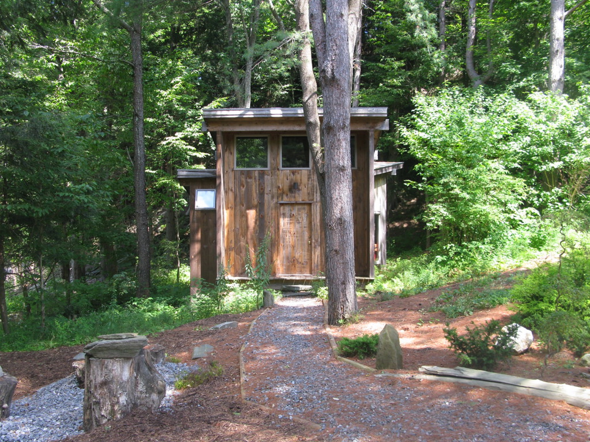
03 / Stay
Room details provisional — awaiting property confirmation
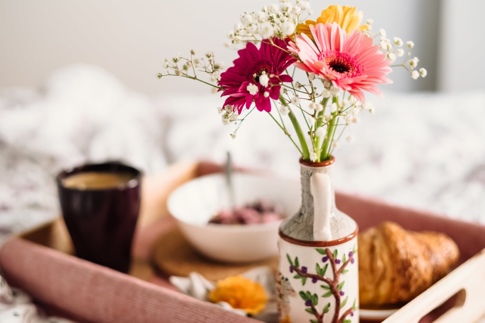
Morning / Laltin
06:14
The first light.
05 / Experience
Five ways the days pass
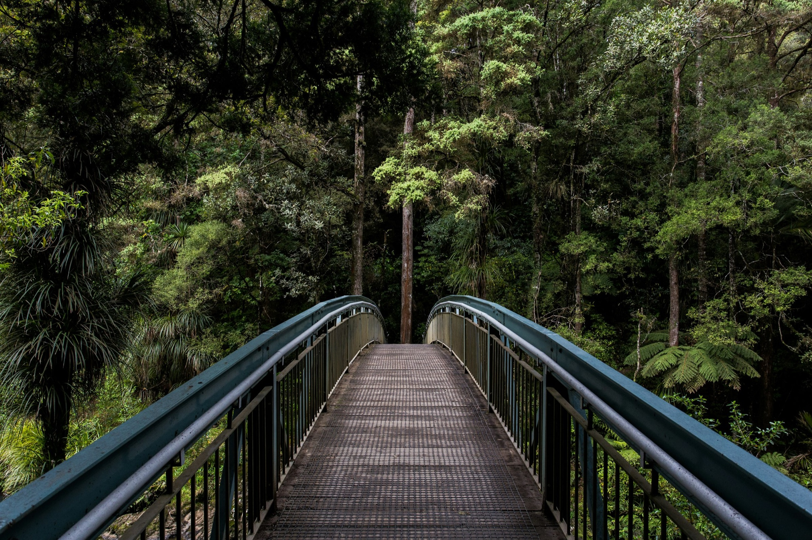
The trail begins beyond the last cottage. From there, the forest takes over — oak, birdsong, damp earth and long stretches where nobody needs to say anything.
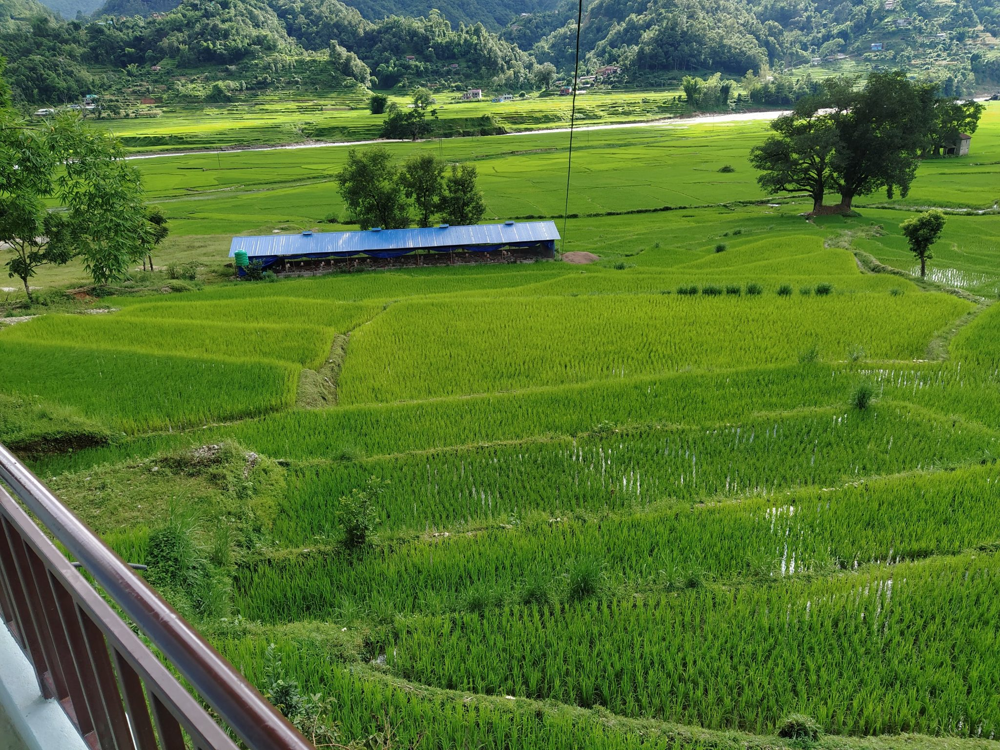
Walk beyond the resort and the landscape becomes everyday life: farms, footpaths, homes and people who have shaped this hillside for generations.
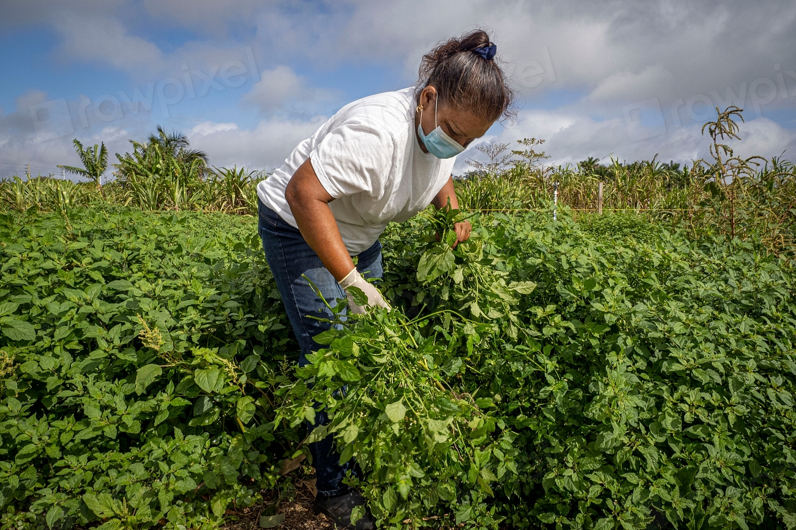
Everything in the kitchen begins a few steps from it. What is ready in the morning decides what is cooked that night.
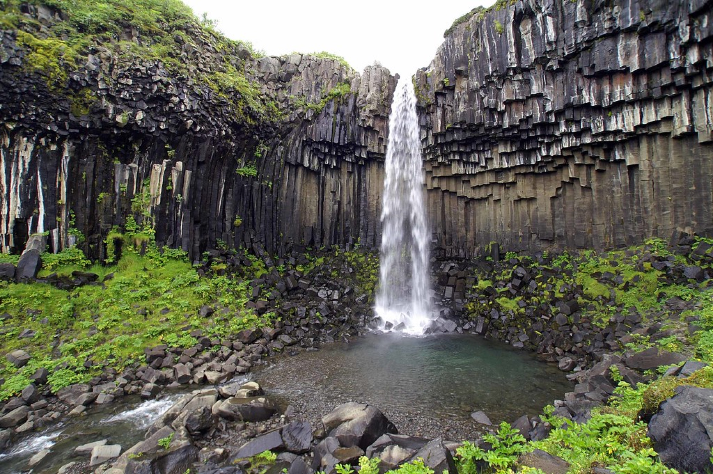
The way down is not signposted. You hear the water before you see it — a low sound over stone, getting closer.
When daylight leaves the valley, Laltin becomes what its name promises. Fires are lit, lanterns come on, and dinner slows into evening.
06 / Eat
Garden → kitchen → table
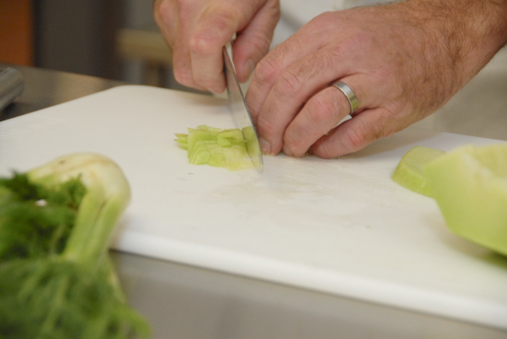
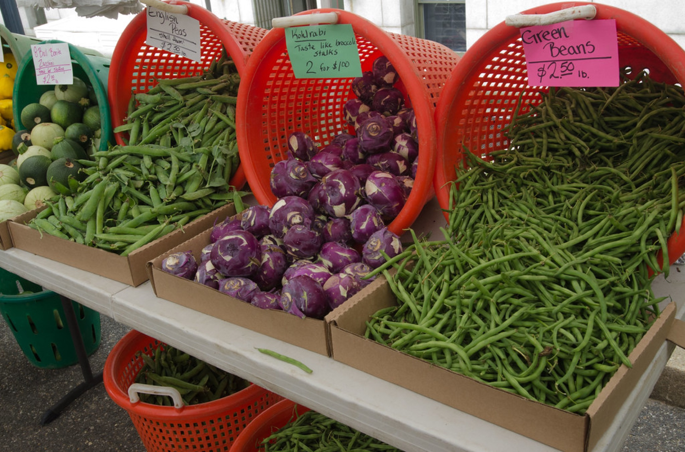
Garden
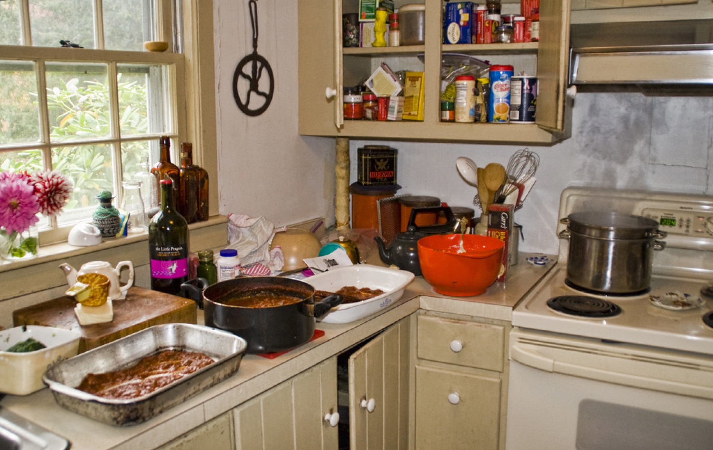
Kitchen
Table
Tonight
Sample · seasonal — the menu changes with what is ready
07 / People
Hosts, cooks, guides
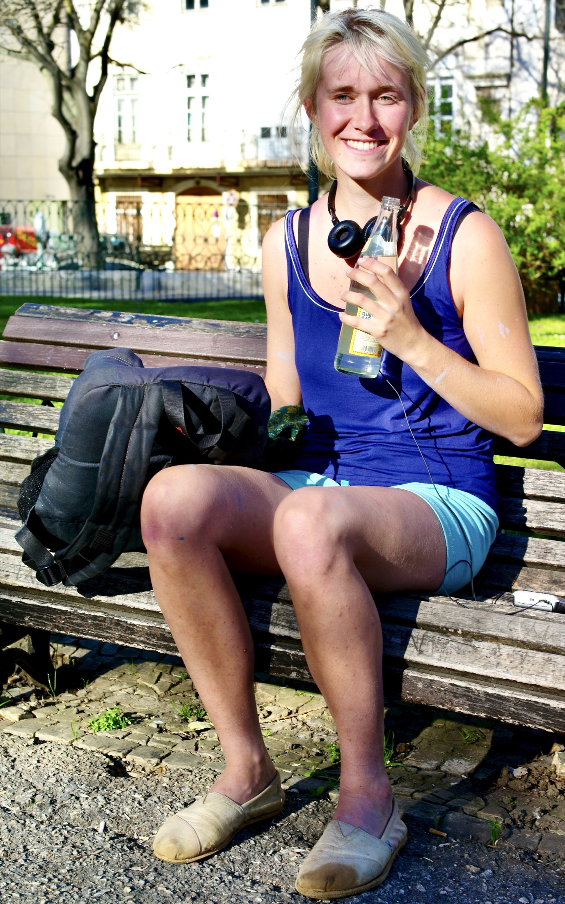
[ Quote to be recorded ]
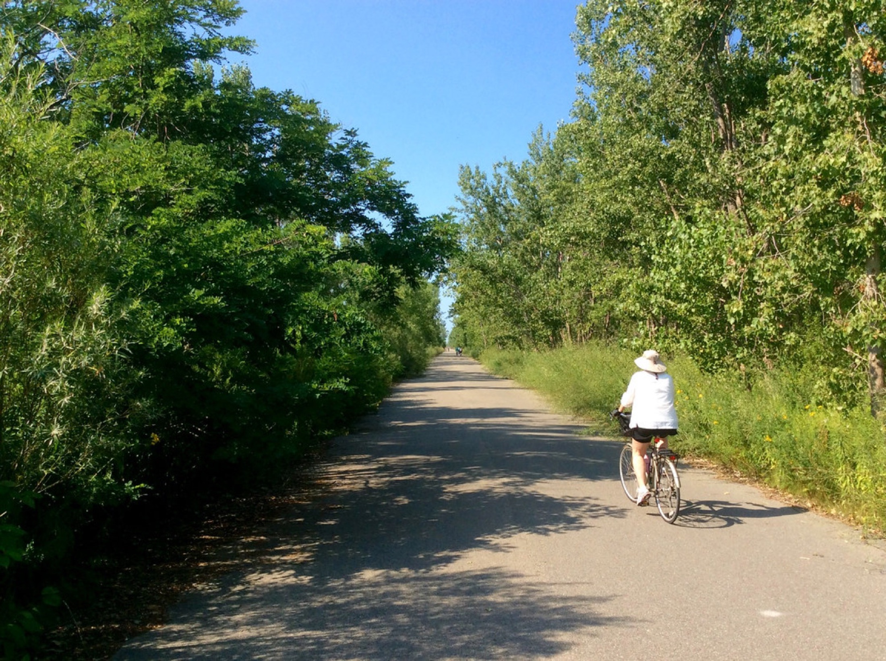
Real names, roles and words only — nothing here will be invented.
08 / Our footprint
Documented, not advertised
How the place actually runs — published only once each practice is verified. Specificity creates credibility.
09 / Getting here
Place / data
27.7172° N
85.3240° E
Alt / 1,850 m
Routes, transfers and directions are published once they are confirmed with the property — an honest journey beats a fast claim.
[ Travel details — to be confirmed ]
10 / Dusk
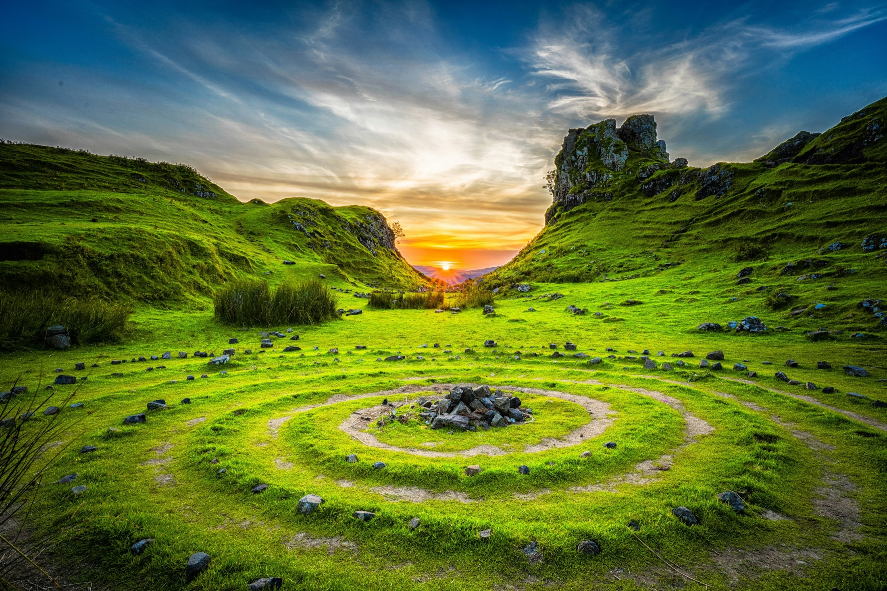
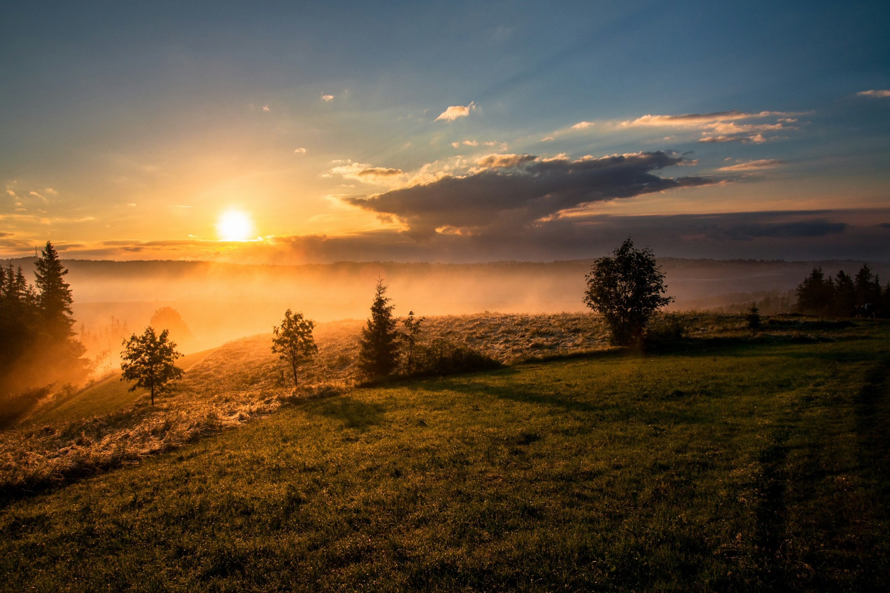
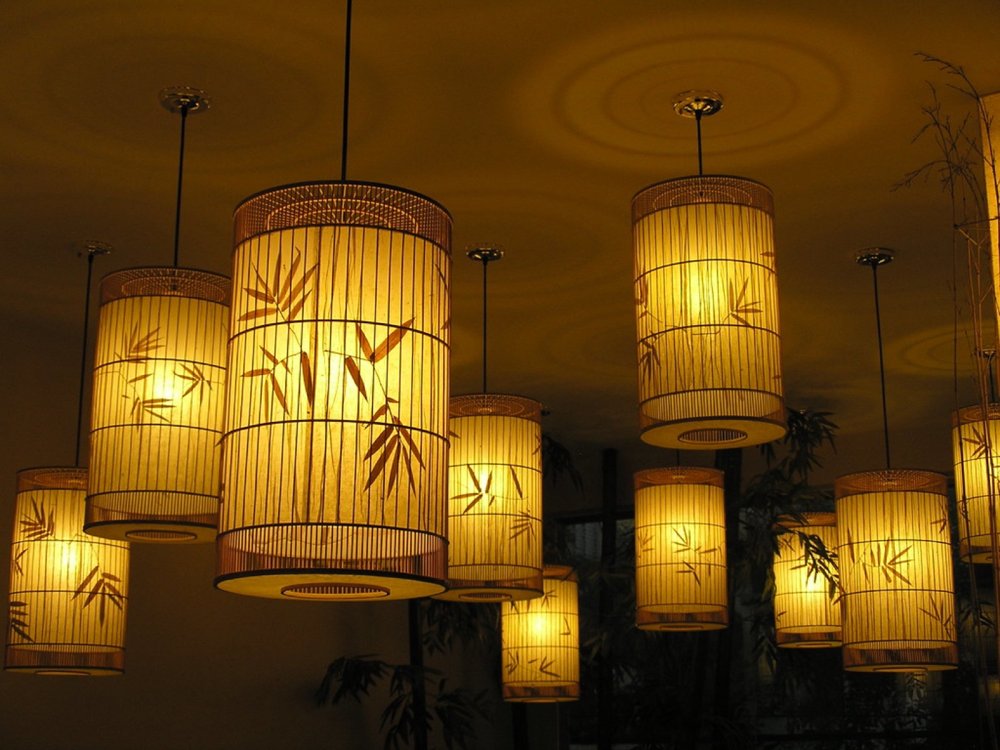
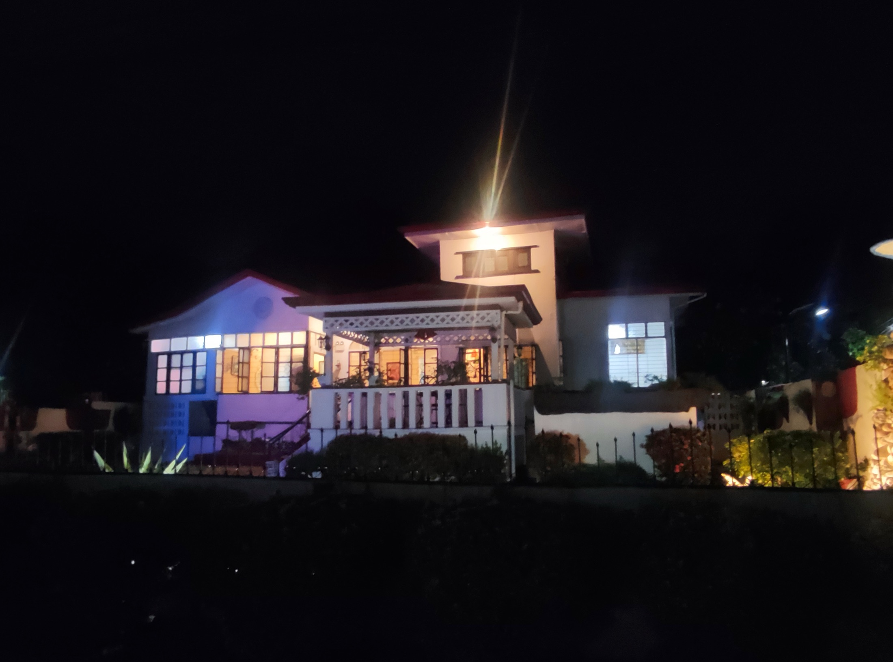
A place where life becomes quieter as the light becomes warmer
12 / Journal
Stories from the hillside
13 / Reserve
01 / 04
Details provisional — confirmed with the property before publication
Place
[ Full story — editorial in progress ]